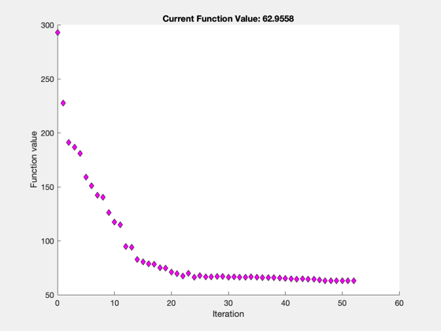
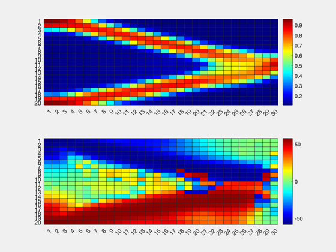
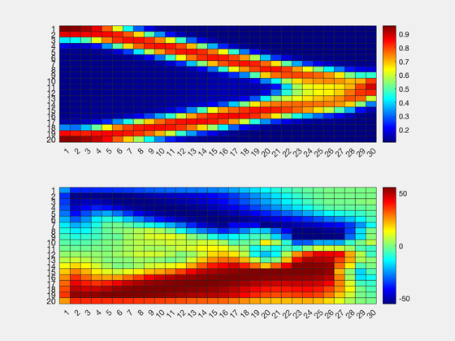
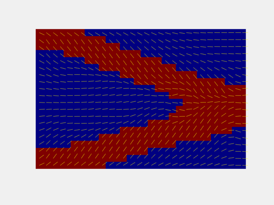

clear all; close all;
global nelx nely vol volfrac ang angle penal rmin
nelx=30;
nely=20;
volfrac=0.35;
angle=0.01;
penal=3;
rmin=1.5;
filt=3;
UP=0.33;
option = optimoptions('fmincon','Algorithm','interior-point',...
'GradObj','on',...
'TolX',1E-10,...
'TolFun',1E-10,...
'PlotFcns',@optimplotfval,...
'GradConstr','on',...
'MaxFunctionEvaluations',2000);
c0 = volfrac;
rho0 = volfrac*ones(nely,nelx);
thetau=-1*pi/4*ones(round(nely/2),nelx);
thetas=1*pi/4*ones(round(nely/2),nelx);
theta0=[thetau;thetas];
nele=nelx*nely;
x0 = [rho0(:);theta0(:)];
lb = [1E-6*ones(length(rho0(:)),1);-pi*UP*ones(length(theta0(:)),1)];
ub = [ones(length(rho0(:)),1);pi*UP*ones(length(theta0(:)),1)];
Aeq = [ones(1,length(rho0(:))) zeros(1,length(theta0(:)))];
beq = nelx*nely*c0;
x = fmincon('top_obj',x0,[],[],Aeq,beq,lb,ub,[],option);
rho = x(1:length(x)/2); theta = x(length(x)/2+1:end);
rho = reshape(rho,nely,nelx);
theta = reshape(theta,nely,nelx);
[XC,YC]=meshgrid(1:nelx,1:nely);
rho_plot = 1-rho(:,:);
[XC,YC]=meshgrid(1:nelx,1:nely);
figure(2);subplot(211);
heatmap(rho);
subplot(212);
heatmap(rad2deg(theta));
colormap(jet(512));
thres_rho=double(rho>0.3);
figure(3)
imagesc(thres_rho);
colormap(jet(512));
hold on;
quiver(XC, YC, cos((-theta)) , sin((-theta)),0.6,'y','ShowArrowHead', false);axis equal; axis tight; axis off;
K = (1/(filt.^2))*ones(filt);
theta = conv2(theta,K,'same');
figure(4);subplot(211);
heatmap(rho);
subplot(212);
heatmap(rad2deg(theta));
colormap(jet(512));
thres_rho=double(rho>0.3);
figure(5)
imagesc(thres_rho);
colormap(jet(512));
hold on;
quiver(XC, YC, cos((-theta)) , sin((-theta)),0.6,'y','ShowArrowHead', false);axis equal; axis tight; axis off;
Local minimum possible. Constraints satisfied.
fmincon stopped because the size of the current step is less than
the value of the step size tolerance and constraints are
satisfied to within the value of the constraint tolerance.
   